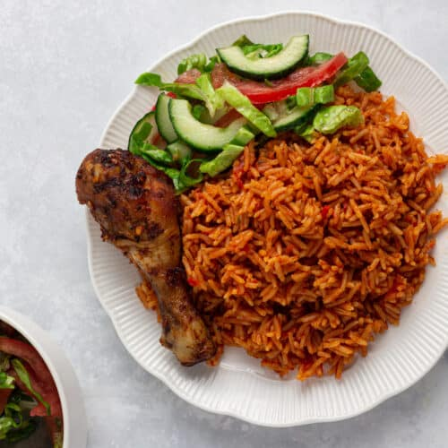

Jollof Rice

Description of Recipe
Jollof Rice is one of the most common one-pot dishes in West Africa. It traditionally consists of jasmine or basmati rice,
cooking oil, tomato, onion, curry powder, red pepper, garlic, ginger, and scotch bonnet. The spices used to enhance the flavors are salt,
ground pepper seasoning such as cayenne, and other herby spices like nutmeg and dried thyme are used.
Jollof can be enjoyed as is, but many people will compliment the dish with chicken, beef, fish, or even a salad.Oh just
so i do not forget, GHANAIAN JOLLOF is the best Jollof just so we are clear here thanks!
Ingredients for Jollof
- 6 large tomatoes
- 4 large onions
- 6 cloves of pressed garlic
- 2 chillies (optional)
- 2 tablespoons of tomato paste
- Vegetable oil
- 500g of beef, chicken, or lamb (alternative: mixed vegetables)
- 800g long grain rice
- 1.5 litres of water or stock (± 1 stock cube, depending on how much meat is used)
- 1 teaspoon each of ground white and black pepper
Instructions for making Jollof
- Put tomatoes into the blender and set aside.
- In a non-stick pot, fry pre-cooked meat in oil until browned. Remove and set aside.
- Add onions to the pot and fry until soft.
- Add garlic and the blended tomatoes to the onions.
- Add meat stock and/or stock cube(s), tomato paste, ground white and black pepper, and stir.
- Season well, keeping in mind that rice will be added to the sauce later.
- Cook for approximately 10 minutes on medium heat.
- Add rice, stir and mix well, then cover.
- Cook on low heat for approximately 20 minutes.
- Add vegetables and mix well.
- Add about 1 cup more of water and continue to cook on low heat until the rice is done.
Here's a teleportation portal back to the Home page
Home